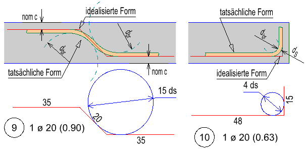
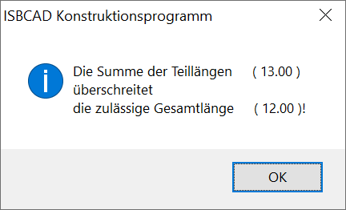
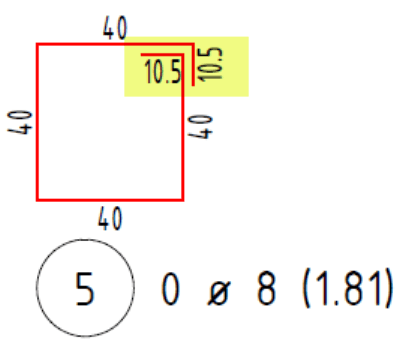
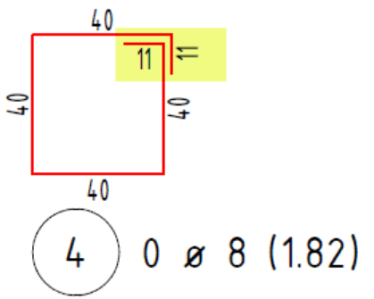

")

Erzeugen, Ableiten und Bearbeiten einer Biegeform.
·Für übliche Bewehrungsformen steht Ihnen die Formtyptabelle für Standardtypen [ForTyp] zur Verfügung.
·Wenn die Schalform so ausgebildet ist, dass kein Standardtyp verwendet werden kann, können Sie den Auszug mit der Funktion [ForAbl] an einer Schalkante ableiten. Die Funktion [ForSch] bietet Ihnen die meisten Möglichkeiten, um Biegeformen an Schalkanten zu entwickeln.
·Eine weitere Möglichkeit besteht darin, die Form aus Linien und Teilkreisen vorzuzeichnen und dann in eine Auszugsform mit Verlegung zu ändern [ForGeo]. Mit [ForGeo] kann auch aus einer Stabstahlform eine Mattenform und umgekehrt gebildet werden.
Vorbemerkungen:
·Die Auszugsformen werden als Strichform gezeichnet. Jedes Maß entspricht dem Außenmaß! Bei Bögen handelt es sich um den äußeren Umfang.
 |
·Im Normalfall werden alle Maße als Außenmaße verstanden. Nur bei bestimmten Formen sollten Sie die Achsmaße verwenden.
·Bei der Eingabe der Durchmesser (z. B. Formtyp 12 [ForTyp]) müssen Sie den Stabdurchmesser zweimal addieren.
·Im Hinblick auf die (später durchzuführende) „Echtdarstellung“ müssen Sie die Maße auf die „richtige Seite“ bringen.
·Beim Erzeugen und Verändern von Biegeformen wird die Schnittlänge geprüft. Sollte die Lieferlänge überschritten werden, erscheint eine entsprechende Meldung.
 Das Programm wird trotz der Meldung fortgesetzt. Je nachdem, in welchem Programmteil Sie sich befinden, können Sie mit |
 zur Eingabe der Länge zurückkehren oder, wenn die Aktion beendet ist, mit
zur Eingabe der Länge zurückkehren oder, wenn die Aktion beendet ist, mit  die komplette Eingabe wiederholen. Als weitere Möglichkeiten können Sie die Funktionen [
die komplette Eingabe wiederholen. Als weitere Möglichkeiten können Sie die Funktionen [·Beim Verlegen wird nach Eingabe der Verlegebereichslänge der wahre Abstand zwischen den Eisen ermittelt. Wird dabei der zulässige Mindestabstand unterschritten, werden Sie durch eine Meldung darauf hingewiesen. Ergänzende Hinweise unterstützen Sie bei der Problemlösung. Um nicht fachgerechte Verlegungen zu vermeiden, empfehlen wir dringend, die Hinweise in der Meldung zu berücksichtigen. Wenn Sie die Meldung ignorieren, können Sie auch mit den gewählten Einstellungen weiterarbeiten.
Aufrunden von Hakenlängen:
In den Systemdaten können Sie angeben, ob Hakenlängen an neu erzeugten Bewehrungsformen standardmäßig auf halbe oder ganze Zentimeter gerundet werden sollen. Voreingestellt ist das Runden auf halbe Zentimeter.
Auf halbe Zentimeter gerundet  |
Auf ganze Zentimeter gerundet  |
Biegebetriebe runden alle Teillängen grundsätzlich auf ganze Zentimeter. Um sicherzustellen, dass Ihre Biegeform auch wie geplant auf die Baustelle geliefert wird, stellen Sie am besten die Option [auf ganze cm aufrunden] ein.
Funktionen |
Beschreibung |
|---|---|
Biegeform an der Schalkante ableiten. |
|
Biegeform aus einer Typentabelle erzeugen. |
|
Biegeform aus Geometrie-Polygon erzeugen. |
|
Biegeform an Schalung ableiten. |
|
Gesamtlänge ermitteln. |
|
Position löschen. |
|
Durchmesser ändern. |
|
Form löschen. |
|
Auszugsform dehnen. |
|
Geometrie dehnen. |
|
Teillänge ändern. |
|
Teillänge anfügen. |
|
Auszugsform kopieren. |
|
Informationen zu Auszügen anzeigen. |
|
Mechanische Verbindungen erzeugen. |
|
Mechanische Verbindungen entfernen. |
|
Summandentext für Auszüge anlegen. |
|
Biegeliste mit Zusatztext ergänzen. |
|
Biegerollendurchmesser anzeigen. |
|
Positionsumrandung oder Stahlgüte ändern. |
|
Örtlich zu biegende Bewehrung erzeugen oder ändern. |
|
Örtlich zu biegende Bewehrung entfernen. |
Optionen |
Beschreibung |
|---|---|
|
Pos.X: Gewählte Positionsnummer. Ø...: Voreinstellung des Durchmessers; Anzeige ggf. mit aktueller Anzahl der Stahlelemente. |
|
nBautl=...: Voreingestellter Bauteilfaktor. [Formst | nBautl | Voreinstellg]. 0.03: Aktuell eingestellte Betondeckung. Öffnet den Dialog Betondeckung nach EC2. |
Aktuelle Länge (in Eingabeeinheiten). |